User needs, business goals, regulations, operating context, feedback, and known constraints.
Phase 01 · Direction and requirements
Planning
Determine what should be built, why it matters, who is affected, what conditions it must satisfy, and whether the work is feasible before design begins.
At a glance
Planning turns an idea into an agreed direction.
Planning combines business intent with requirements work. The team identifies stakeholders, sets goals and measurable objectives, gathers and analyzes needs, defines scope and constraints, estimates cost and schedule, and records the risks that could change the plan.
Elicit, document, analyze, confirm, and prioritize requirements while testing feasibility.
Scope, schedule, risks, ownership, requirements documents, priorities, and acceptance expectations.
Repository workflow
Six steps for requirements gathering
- Identify stakeholdersInclude representatives from every affected group: decision-makers, users, administrators, engineering, marketing, sales, support, and other relevant parties.
- Establish goals and objectivesGoals describe broad long-term outcomes. Objectives turn those goals into specific, actionable, measurable steps.
- Elicit requirementsCollect information through interviews, surveys, questionnaires, observation, workshops, or prototypes when an idea needs clarification.
- Document requirementsRecord needs in language that both stakeholders and the project team can understand, including behavior, interfaces, constraints, and quality expectations.
- Analyze and confirmCheck the requirements for clarity, consistency, completeness, feasibility, and alignment with the project goals, then obtain approval.
- PrioritizeRank requirements by value and urgency using categories such as must-have, highly desired, and nice-to-have.
Iteration is normal: elicitation, documentation, and confirmation repeat as people discover conflicts or clarify what success means. A prototype can be used at any phase when uncertainty reappears.
Planning artifacts
Three requirements documents with different scopes
| Document | What it covers | Typical contents |
|---|---|---|
| URS | User Requirements Specification: business needs and end-user expectations. | User stories or use cases that identify the user, the needed function, and its value. |
| SRS | Software Requirements Specification: the required behavior of the software. | Purpose, scope, constraints, assumptions, dependencies, functional requirements, external interfaces, system features, and nonfunctional requirements. |
| SysRS | System Requirements Specification: the full system, including hardware and software. | Capabilities, interfaces, users, policies, regulations, staffing, performance, security, hardware, and acceptance criteria. |
Common usage: the SRS is the most common document, and user requirements may be included within it. A SysRS is broader, though teams sometimes use SRS and SysRS interchangeably.
Evidence and handoff
What Design should receive
- Defined problem and outcomeThe team can explain the user or business problem and measure whether the finished software improves it.
- Approved requirementsFunctional behavior, interfaces, features, quality expectations, constraints, assumptions, and dependencies are documented and prioritized.
- Delivery boundariesScope, budget, schedule, resources, compliance needs, owners, risks, and unresolved questions are visible.
- Acceptance basisCritical requirements have observable acceptance criteria so later testing can produce meaningful evidence.
Artifact traceability
This existing project diagram shows how stakeholder needs remain connected to design, code, tests, releases, and operational learning.


Plain-language terminology
Terms used in Planning
- Stakeholder
- A person or group that uses, funds, builds, operates, approves, supports, sells, or is affected by the software.
- Goal
- A broad, long-term outcome the project intends to support.
- Objective
- A specific, actionable, measurable step toward a goal.
- Elicitation
- The act of drawing out needs and knowledge through interviews, surveys, observation, workshops, or other research.
- Functional requirement
- A statement of what the software must do.
- External-interface requirement
- A rule for how the software interacts with a person, hardware device, or another software system.
- System feature
- A required capability that helps the system perform its functions; it is a subset of functional requirements.
- Nonfunctional requirement
- A quality or operating expectation, such as performance, security, accessibility, reliability, or safety.
- Constraint
- A limit that narrows design choices, such as a platform, regulation, budget, or deadline.
- Assumption
- A condition expected to be true for planning purposes but not yet proven.
- Dependency
- Another system, service, team, library, or condition that the proposed software relies on.
- Acceptance criteria
- Observable conditions that must be met for a requirement or feature to be accepted.
- Prototype
- A small-scale model or preliminary mock-up used to test an idea and collect feedback before committing to a full solution.
Source note
Planning content follows the repository’s SDLC, quality, and requirements summary.